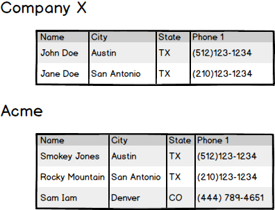
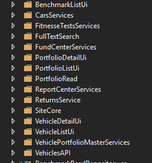

Single Responsibility Principle
Goal
Apply to more than just classes

Can be used as a software architecture guideline.
Function


Functions should do one thing. They should do it well. They should do it only.
-- Robert Martin
4 or less lines is a good size.
Code Example
Class

A class should have only one reason to change.
-- Robert Martin
reason to change???
Why Change
- Technical Reasons
- Business Reasons
Have a bias toward Business Reasons
Example
Contact Management (CRM)
Company Report



Module
A collection of classes and functions.
A module should have a well defined set of reasons to change...
...and these reasons should have a bias toward a business outcome.
Categories
- Business Logic
- Abstract you from Implementation Details
- Delivery Mechanisms
Cohesion
put similar things together
Organize Folders by Use Case
Folders Gone Wrong

System
- is "deployable"
- can be made up of multiple executables elements on multiple machines
High Business Bias

Clean Architecture
Onion Architecture
Identifying Slices
Bounded Context

Domain Driven Design
Bounded Context

Business Logic <==> Data
Report Center
Team
Team should understand what business outcomes they are and are NOT responsible.
Autonomy


But we have no bounded context.
:(
Understand Your Reasons to Change
and resons you would like to STOP changing.
Team Responsibilities
- Clients and their Properties
- Sales Pipeline
- Fund Onboarding
- Client AUM Calculation
- GIPS Composites *
- Portfolios *
Responsibilities to Shed
- Fund Trade Calculations
- Fund Trade Reporting
- Equity Characteristics Aggregation
- Fixed Income Characteristics Aggregation